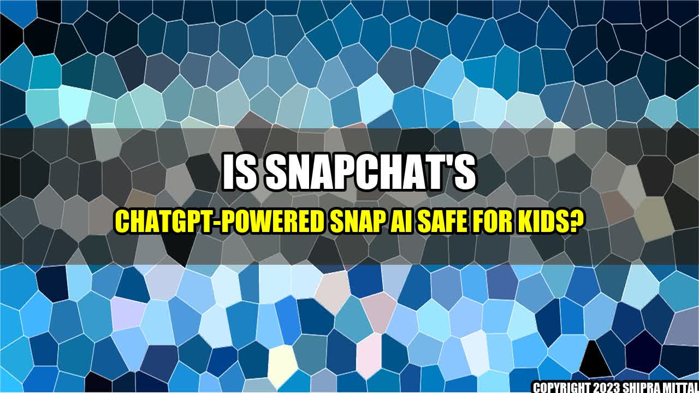

Once upon a time, there was a popular social media app called Snapchat, known for its disappearing photo and video messages. One day, the app introduced a new feature called ChatGPT-powered Snap AI, which used advanced artificial intelligence to generate sophisticated chat responses for its users.
Many people were excited about the new feature, especially those who struggle to come up with interesting things to say in conversations. However, not everyone was thrilled about ChatGPT-powered Snap AI, particularly parents who were worried about their kids using the technology.
The Potential Risks and Benefits of Snap AI for Kids
On one hand, Snap AI could potentially help kids develop their social skills by providing them with more engaging and stimulating conversations. It could also promote mental health by reducing social anxiety caused by feeling stuck in conversations.
On the other hand, there are some legitimate concerns about the safety of Snap AI for kids. For example:
- What if the AI generates inappropriate or harmful content?
- What if the AI encourages kids to share personal information they shouldn't?
- What if the AI creates a false sense of intimacy between kids and strangers online?
Ultimately, it's up to parents to decide whether Snap AI is appropriate for their children. They should weigh the potential risks and benefits and monitor their kids' usage to ensure they stay safe online.
Conclusion
In summary, Snap AI is a groundbreaking technological advancement with the potential to revolutionize social media conversations. However, it's not without its potential risks, particularly for kids. Therefore, parents should exercise caution and make informed decisions about whether to allow their children to use the technology.
Reference URLs:
Akash Mittal Tech Article
Share on Twitter Share on LinkedIn